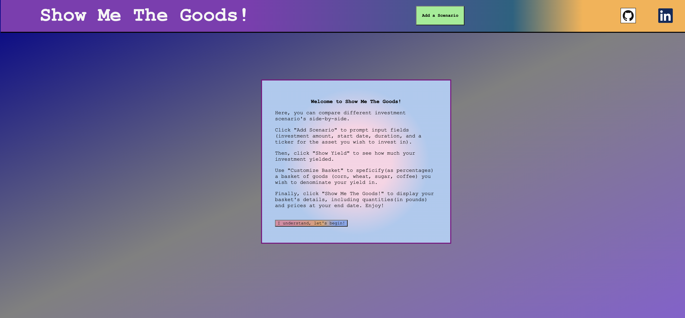

Show Me The Goods!: Investment Calculator
Built using: Vanilla JS, external API's, HTML, CSS

In this project, I used Vanilla JS and 3rd party API's to created a simple investment calculator for equity perfomance, but with the added ability to price outcomes in terms of historically commodity values. Users can add scenario's and input values for start date, duration, investment vehicle, and the composition of the commodities basket they with to denominate their ending value in. The purpose of this simple app to add another perspective/data display tool for looking at inflation.